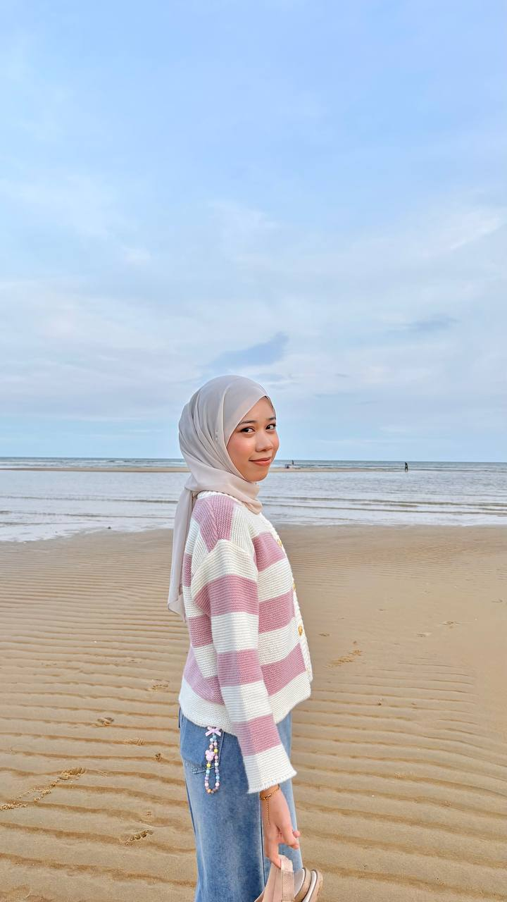
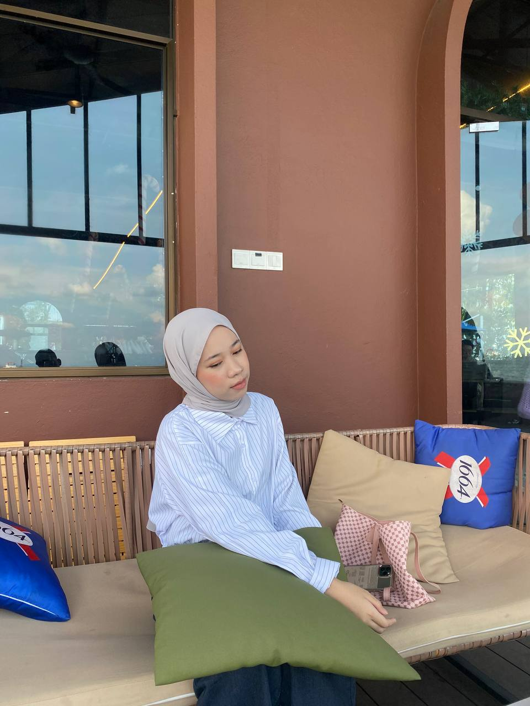
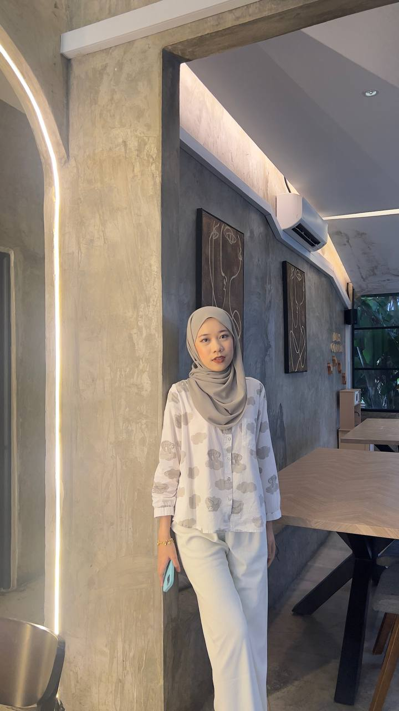

My name is Fatin Nabilla binti Zamri. I am 20 years old and was born at Hospital Lahad Datu, Sabah. Now, I move and live at Pasir Puteh, Kelantan. I’m a Diploma in Information Management student at Universiti Teknologi MARA (UiTM). I'm a positive and curious person who loves learning new things every day.
In my free time, I enjoy reading, listening to music, and spending moments with people I love. My goal is to become a good and successful Software Engineer. I want to improve my skills, learn more about technology, and create things that can help people. I believe that with hard work and a positive attitude, I can achieve my dreams and build a bright future for myself
THIS IS MY SOCIAL MEDIA: